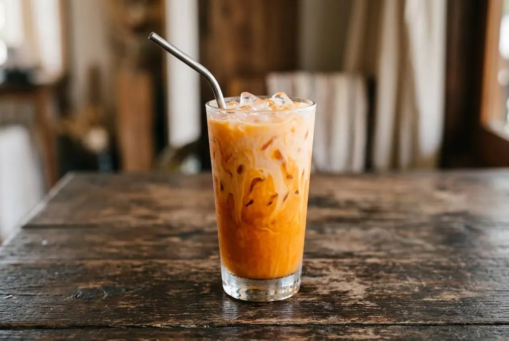

Spiced black tea steeped strong, condensed milk, full ice, evaporated milk poured over the top. The orange is practical, not natural — and Thailand argues about the name.

The colour is the dish's best story: it's added food colouring, and the reason is logistics. Once milk goes in, iced tea and iced coffee both turn beige — so shops coloured the tea orange so staff could tell ชาเย็น from โอเลี้ยง apart at a glance. There's an older theory too: servants re-steeping spent leaves until the colour faded, then restoring it with roasted tamarind seed. Either way, the orange is practical, not natural — a fact most western recipes never mention.
The tea itself is the real thing: a spiced black-tea blend — Ceylon leaves cut with star anise and cardamom — the famous Cha Tra Mue (Number One) brand. Red pack is fragrant; gold pack is stronger and pricier. And the naming is a national argument: ชาเย็น means the classic iced version with condensed milk, ชานม is milk tea, ชาดำ/ชาใส means no milk. A Thai beverage supplier's FAQ is literally titled "Ordered cha yen, why did I get cha nom?" — the country argues about this over the counter every day.
On Pantip the beginner's struggle is the same thread every year: "three days of brewing Cha Tra Mue and it's still not good." The answer is never the brand. It's the steep, the sweetness before the ice, and the pour.
| Thai | English | Amount |
|---|---|---|
| ผงชาไทย (ตรามือ) | Thai tea powder, Cha Tra Mue red pack | 4 tbsp |
| น้ำร้อนจัด | Very hot water | 480 ml |
| นมข้นหวาน | Sweetened condensed milk | 4 tbsp |
| น้ำตาลทราย | Sugar | 2 tsp |
| น้ำแข็ง | Ice | to fill two glasses |
| นมข้นจืด | Evaporated milk, to pour over | 60 ml |
The southern (ปักษ์ใต้) blend, from Wongnai's ten-recipe roundup: 1 tbsp fragrant tea + 1 tbsp Thai tea + 1 tbsp Ceylon tea, 200 ml very hot water, 1 tsp sugar, 2 tbsp condensed milk, ice, 50 ml fresh or evaporated milk.
The sugar. Condensed milk alone, or condensed plus extra sugar — shops run sweeter; home versions cut back.
The milk on top. Evaporated milk poured over (the classic), stirred in, or fresh milk — all standard, the pour is the aesthetic choice.
The blend. One brand (Cha Tra Mue red or gold) against the southern three-tea mix of fragrant, Thai and Ceylon.
Creamer. Commercial litre batches use non-dairy creamer for cost and stability; home glasses never need it.
Hot. ชาร้อน — the same build served hot — exists, but the iced version is the icon.
This recipe is translated from the following Thai-language sources. Where they disagree, we've said so.
1. TrueID (21 May 2024, 360k reads) — "สูตรชงชาไทย ชาเย็น ชานม ชาส้ม เข้มข้นหวานมัน" (shop recipes, glass/bottle/litre scale) — food.trueid.net
2. Kapook / Rin's Cookbook — "สูตรชงชาไทย ชาเย็น สูตรชงชาแบบเข้มข้น หวาน หอม ละมุน" (home method, layered pour) — cooking.kapook.com
3. Wongnai — "10 สูตรชาไทย" (incl. the southern three-tea blend) — wongnai.com
4. Pantip thread 32818339 — "ผมลองชาตรามือชงมา 3 วัน ยังไม่อร่อยเลยครับ" (the beginner struggle) — pantip.com
5. Siamcoolermart — "แจกเทคนิคการชงชาไทยให้อร่อย" (the colour history) — siamcoolermart.com